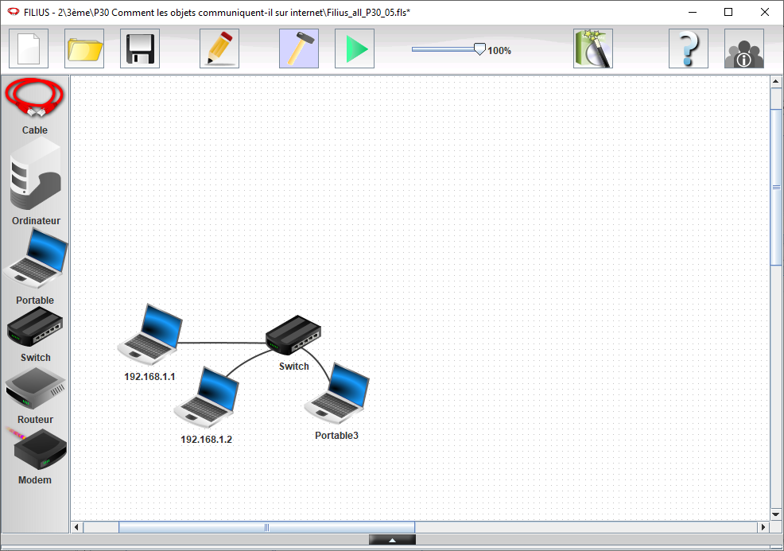
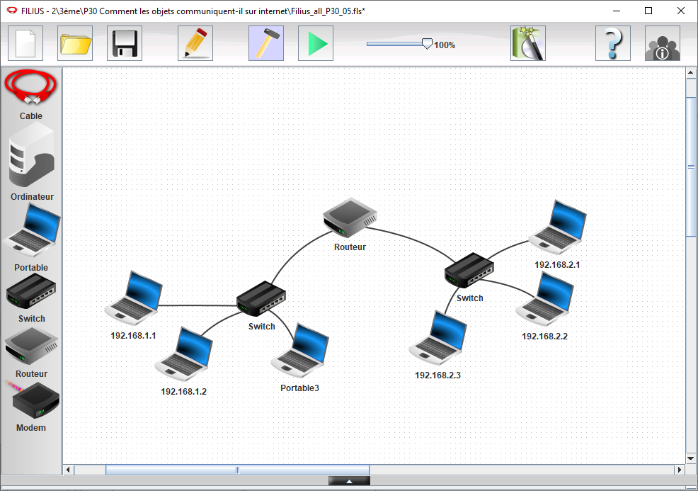
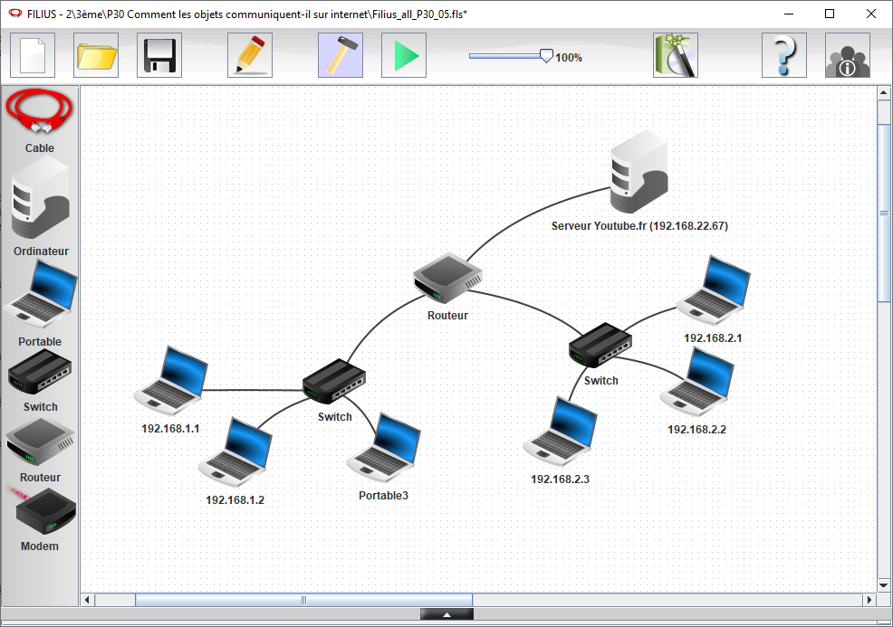
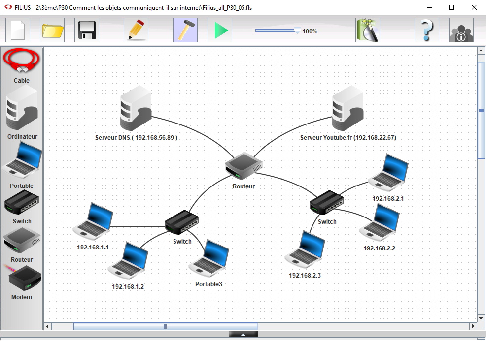

Simulation réseau avec Filius
Cette activité a pour objectifs de:
- découvrir le simulateur de réseau Filius
- modéliser un réseau dans Filius
- identifier les composants d'un réseau local et leurs paramètres de configuration
- comprendre le principe de la résolution d'adresse en observant le fonctionnement d'un réseau local
Présentation de filius
Partie 1: Saisie d'un schéma réseau et Configuration des adresses sur ce réseau

- Dessiner un réseau avec 3 machines "PC portables" (adresses IP
192.168.1.1;192.168.1.2;192.168.1.3) + switch - "installer" des logiciels sur les PC virtuels la "Ligne de commande"
- Tester la communication entre 2 PCs avec la commande
ping
Correction : Correction Filius Partie 1
AIDE outils en ligne de commande :
ipconfig: qui permet de connaître la configuration réseau de la machine sur laquelle est exécutée cette commande (ipconfigest une véritable commande sous Windows. Sous Linux, vous pouvez utiliserifconfig(obsolète) ou bienip.)ping: qui permet d'envoyer des paquets de données d'une machine A vers une machine B. Si la commande est exécutée sur la machine A, lepingdevra être suivi par l'adresse IP de la machine B (par exemple, si l'adresse IP de B est192.168.1.2, on auraping 192.168.1.2
Partie 2: Configuration d'un second réseau local

- Configurer un nouveau réseau démarrant par
192.168.2.xxxavec 3 nouvelles machines "PC portables". - IP des 3 machines
192.168.2.1;192.168.2.2;192.168.2.3. - Réalisez les paramètres nécessaires en ajoutant un routeur afin de permettre la communication entre les deux réseaux.
- Vérifiez le bon fonctionnement de communication entre les deux réseaux, toujours avec la commande
ping. - Les "PC portables" sont a reconfigurer avec l'IP du Routeur/Passerelle
Correction : Correction Filius Partie 2
Partie 3: Serveur WEB

- Ajouter un serveur, "PC fixe", que vous appelez "Youtube.fr" avec l’adresse IP qui n'est ni en
192.168.1.xni192.168.2.x. Par exemple :192.168.20.200. - Sur ce serveur, "Installer" un "serveur web", "Explorateur de fichier", "Editeur de texte".
- "Installer" sur quelques "PC portable" un "navigateur web".
- Depuis un "PC portable" vous devriez pouvoir visualiser la page disponible sur le "serveur web" en utilisant sont adresse IP dans le navigateur.
Correction : Correction Filius Partie 3
Partie 4 (Bonus) : Serveur DNS

- Ajouter un nouveau serveur, "PC fixe", que vous appelez
DNSavec une adresse IP qui n'est ni en192.168.1.xni en192.168.2.x. Par exemple :192.168.100.100. - Sur ce serveur, "Installer" un "serveur DNS".
- Vous devez configurer l'adresse IP du serveur "Youtube.fr" et l'associer a son adresse IP.
- Les "PC portable" sont a reconfigurer avec l'IP du DNS.
- Depuis un "PC portable" vous devriez pouvoir visualiser la page disponible sur le "serveur web" en utilisant cette fois si son nom de domaine "Youtube.fr".
Correction : Correction Filius Partie 4
Partie 5 (Super Bonus): Serveur DHCP
Configurez Filius pour qui émule le fonctionnement d'un serveur DHCP. Les machines récupéreront ainsi automatiquement leurs paramètres réseau:
- leur adresse IP et leur masque de sous-réseau,
- l'adresse de leur routeur par défaut et
- l'adresse du serveur DNS.
Il faut noter qu'en réalité la fonctionnalité DHCP est assurée par un équipement physique sur le réseau. Dans la grande majorité des cas, c'est le routeur d'accès (routeur par défaut, typiquement la box de la maison) qui l'assure.